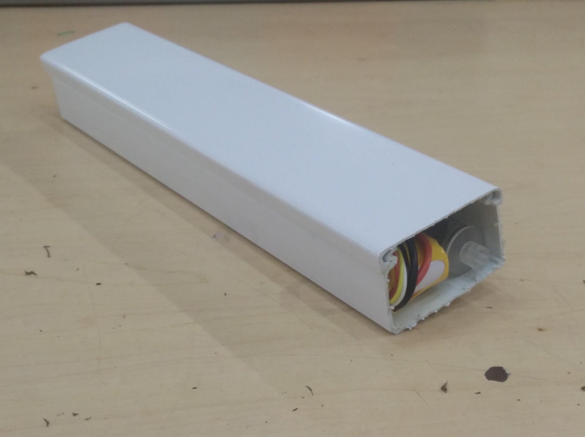

Presentación del producto
Tuberías

Figura 4. Red de tuberías
Robots
Figura 5. Vista externa del robot limpiador

Figura 6. Vista interna del robot limpiador
Figura 4. Red de tuberías
Figura 5. Vista externa del robot limpiador
Figura 6. Vista interna del robot limpiador